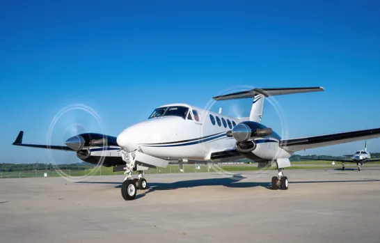
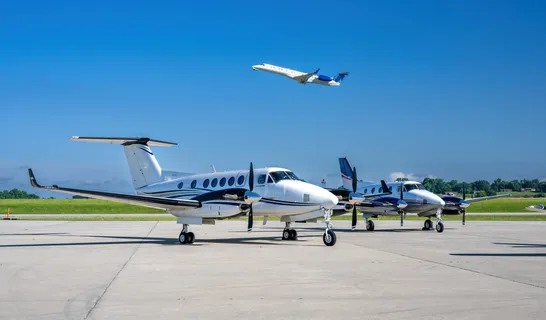
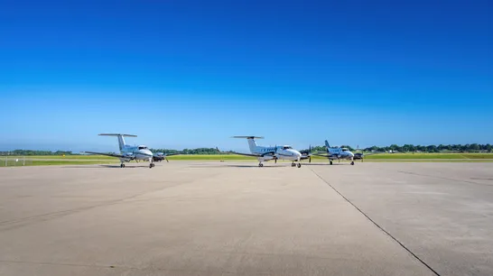
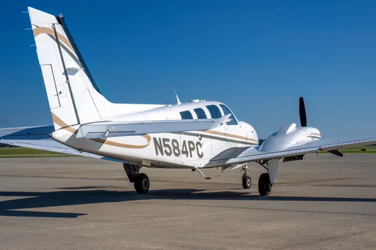

Aircraft
Our Fleet
King Air turboprops and Baron twins—professionally maintained for regional executive travel.

Turboprop Flagship
King Air 250
- Passengers
- Up to 8
- Range
- ~1,720 nm
- Cruise
- ~310 ktas
- Avionics
- Garmin G1000 NXi
Pressurized cabin, turbine reliability, and modern glass cockpit—built for multi-city business days and family travel alike.

Turboprop
King Air 90
- Passengers
- Up to 7
- Range
- ~1,200 nm
- Cruise
- ~260 ktas
- Best for
- Regional legs
Efficient King Air performance for shorter corridors—capable, comfortable, and professionally operated.

Twin Piston
Baron 58
- Passengers
- Up to 5
- Range
- ~1,000 nm
- Cruise
- ~200 ktas
- Best for
- Short hops
Twin-engine redundancy and runway flexibility for cost-conscious regional missions.
Gallery
On the Ramp









Configurations
Cabin Layout Options
Overhead seating diagrams for executive and mixed configurations.


Match Aircraft to Mission
Share your route and passenger count—we'll recommend the right platform.